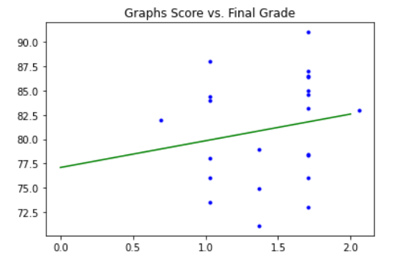
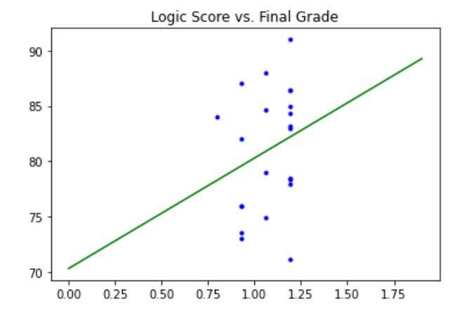
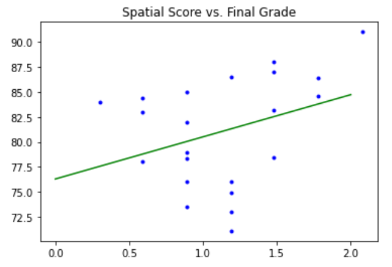
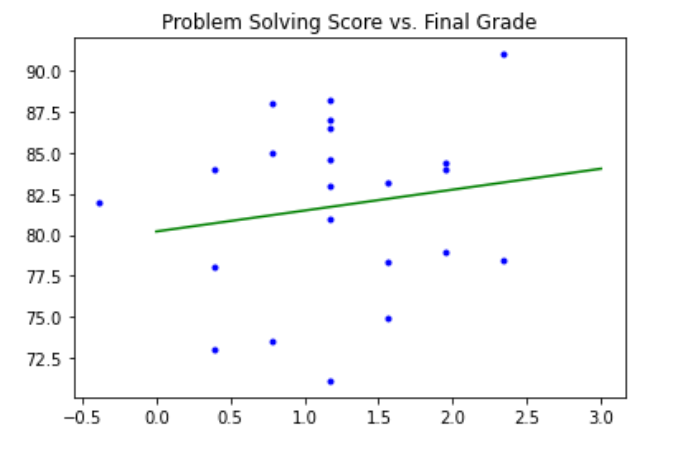
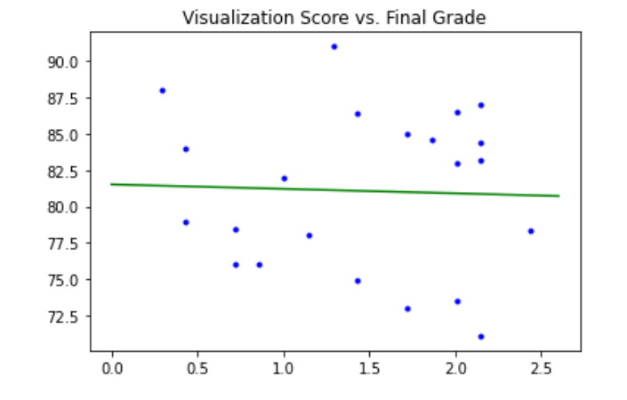
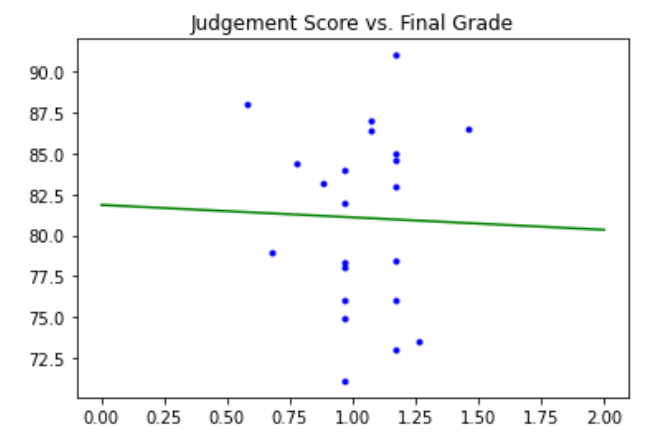
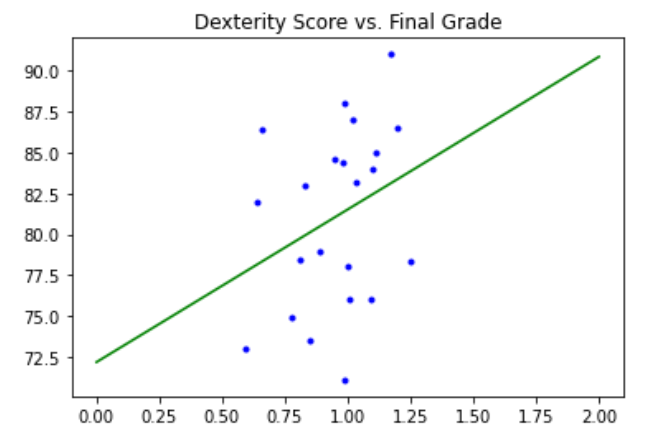
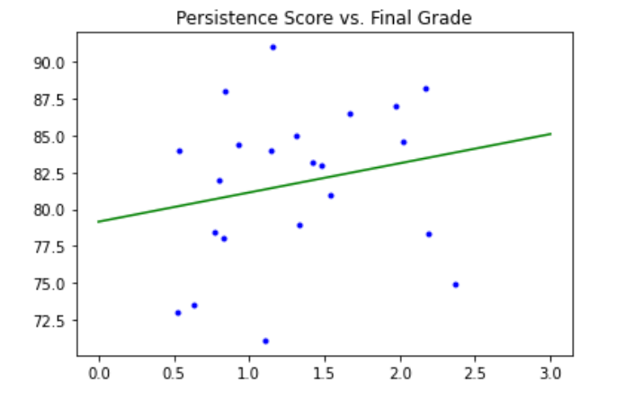

Physics Score Category
The physics category evaluates the student’s scores on spatial resolution, logic, graph interpretation and problem solving




Clinical Score Category
The Clinical category evaluates the student’s scores on visualization, judgment, dexterity/hand-eye coordination, and persistence.



